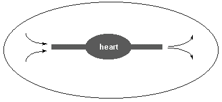

He became so defensive that his instinctive reaction was to disagree with everything we said, even when we were simply stating general principles that are widely accepted by evolutionists. Any nit he could pick, he picked.
He became so defensive that his instinctive reaction was to disagree with everything we said, even when we were simply stating general principles that are widely accepted by evolutionists. Any nit he could pick, he picked.| Feature Article - July 2009 |
| by Do-While Jones |
We finally got some responses to our Seventy-five Theses.
Sixteen months ago, we published "Seventy-five Theses" 1 about the theory of evolution to try to provoke some discussion. We even put a link to the theses from the home page. We received no response for 13 months. Then Devin wrote four largely incomprehensible paragraphs in rebuttal. We would have addressed Devin's email at the time, but our May and June "six-page newsletters" had so much more important stuff in them that they were eight pages long already.
The gist of Devin's email was simply,
| ... you expect that a modern cell somehow appeared out of whole cloth. (#18-#25) This is unnecessary, and beggars any reasonable understanding of how life could have arisen out of simple chemistry in organic soup. |
We were planning to respond to Devin this month, but on June 22 we received a longer email from Eddie. Since Eddie also makes the same point about the alleged simplicity of early life, and does it slightly more coherently, we will address Eddie's entire email instead of Devin's.
We have three overall comments that we want to make about Eddie's email before you read it.
First, once Eddie starts to argue, he can't stop. You will notice that at the beginning of his email, he quibbles only with certain theses. By the time he gets to the end of the email, he is arguing against every thesis on general principle. If our last thesis had been, "Darwin wrote The Origin of Species," he probably would have tried to argue that point! He became so defensive that his instinctive reaction was to disagree with everything we said, even when we were simply stating general principles that are widely accepted by evolutionists. Any nit he could pick, he picked.
This is important because it illustrates why one-on-one arguments are generally useless. Once someone feels backed into a corner it is human nature not to make any attempt to understand what the opponent is saying. He just disputes everything on general principle in an attempt to win the argument. You can see this gradually happening to Eddie as he writes more and more.
Second, Eddie doesn't have any first-hand knowledge, and hasn't given much thought to what he is saying. He is just quoting things he doesn't understand from any source he can find. This is a direct result of his defensiveness. He doesn't know what to say, so he just repeats things other people have said. Furthermore, he wants us to take him at his word, just because he says so.
Third, Eddie's email came from Britain, which explains why he uses the British spelling for "specialise" and "metabolise." That's fine. We're cool with that. We accept British spelling here. But "hereditory," and several other words he wrote, aren't properly spelled on either side of the pond. If Eddie wants us to take him at his word, he should spell the word correctly.
Having said all that, let's look at his entire email in detail.
Eddie apparently had no problems with theses 1 through 16. His comments begin at thesis 17, which deals with the origin of life.
| 17. Evolution has absolutely nothing to do with abiogenisis [sic]. All that it requires are that life exists, and that certain conditions (hereditory [sic] inheritance of traits, differential reproduction etc) are met. It does not, for instance, eliminate the possibility of a supernatural origin of life. |
We have said, over and over, that evolutionists claim that the origin of life has nothing to do with evolution. Eddie proves our point. Abiogenesis is part of the theory of evolution. That's why it is included in college biology textbooks in the Evolution section, as we have shown in a previous essay. 2
| 20. May I direct you to http://www.youtube.com/watch?v=U6QYDdgP9eg&feature;=channel_page. Early protocells most likely did not metabolise. |
This is a really amusing 10-minute video, although it isn't intended to be. Forty-three seconds into the video, bold words on the screen say,
|
The origin of life, abiogenesis, has NOTHING to do with the theory of evolution. 3 [capitals in the video] |
But then, after presenting a silly story how life could have originated through purely natural processes, the video says,
|
Thus beginning evolution! 4 |
If abiogenesis began evolution, then it must have something to do with evolution.
The video recognizes that every known form of life is much too complex to have arisen by any natural process.
|
Early life could not have been as complex as modern cells. 5 Early life must have been extremely simple, meaning no complex protein machinery. 6 Again, modern nucleotides are too stable and require complex protein machinery to replicate. 7 |
Rejecting the obvious conclusion that life is too complex to have arisen by chance, the video concludes that some unknown, earlier, simpler form of life must have originated and evolved into the complex life we know today. There is no evidence that this actually happened--but it must have happened because life exists! This isn't science--it's wishful thinking.
The bulk of the video presents a fanciful story, attributed to Dr. Szostak, professor at Harvard Medical School, about how life certainly began.
|
A simple 2 component system that SPONTANEOUSLY forms in the pre-biotic Earth can eat, grow, contain information, replicate, and EVOLVE. 8 [capitals in the video] |
Here is another admission that evolution has something to do with the origin of life in the "pre-biotic [i.e., before life] Earth," despite the video's previous claim that evolution has NOTHING to do with the origin of life.
The method described in the video could easily be replicated in the laboratory. Dr. Jack Szostak did present a paper at an origin of life workshop in February, 2003, which "addressed the ability to generate new living organisms in the laboratory". 9 That was more than six years ago, and he still hasn't been given the Nobel Prize for his explanation of how life on Earth began. We wonder why. Could it be that his explanation isn't scientifically valid, and can't actually be demonstrated in the laboratory?
The YouTube video fools a lot of people (including Eddie) into thinking that the origin of life problem has been solved. Remember, to refute Thesis 20 he stated this absolute fact, "Early protocells most likely did not metabolise." This is not something that Eddie knows--it is something Eddie believes simply because somebody said so.
Furthermore, Eddie makes this statement about Thesis 24.
| 24. Whilst the form of cell division used in most life today is very complex, early division would most likely have been driven by mechanical forces such as waves upon early cells. |
That may be true of the mythical early cells described in the video, but it has nothing to do with reality.
Eddie has no reason to believe any of these things, other than that he has been told they are true, and he has seen a slick video. He ignores the demonstrable facts (that even the simplest living cell is far too complex to have originated by any natural process) and believes a story that could easily be (but has not been) experimentally verified.
The Internet media made a big deal out of Dr. Szostak's work in September, 2008. 10 We addressed it last February. 11 It was just another case of the popular media trying to make something out of nothing, just like they did with Ida. 12
To save you the trouble of looking up our theses 26, 27, and 28, here they are:
|
26 According to the theory of evolution, single-celled life forms evolved into multi-cellular life forms. 27 Multi-cellular life forms consist of an assembly of cells that have different functions. 28 There is no scientific explanation for how a single cell could or would naturally change function. |
Here is Eddie's response:
| 27. Not all of them. One example taken from wikipedia's page on bacteria: "Even more complex morphological changes are sometimes possible. For example, when starved of amino acids, Myxobacteria detect surrounding cells in a process known as quorum sensing, migrate towards each other, and aggregate to form fruiting bodies up to 500 micrometres [sic] long and containing approximately 100,000 bacterial cells. In these fruiting bodies, the bacteria perform separate tasks; this type of cooperation is a simple type of multicellular organisation. For example, about one in 10 cells migrate to the top of these fruiting bodies and differentiate into a specialised dormant state called myxospores, which are more resistant to drying and other adverse environmental conditions than are ordinary cells." |
He has completely missed our point. The point we are making is that for fish to evolve, some cells have to become bone cells, some cells have to become scales, some cells have to become gills, etc. Cooperating bacteria don't come close to explaining how this could have happened.
Not only that, he is quoting Wikipedia as if it were authoritative! Anybody (even Eddie) could have written that Wikipedia article. It would have been more convincing if his data had come from a peer-reviewed science journal rather than an anonymous author.
| 28. The same example (Myxobacteria) shows that this is incorrect - the environment in which a cell is situated will, in some cases, cause a cell to change. This is the basis of specialisation within an organism. |
This is not a scientific explanation. It is wishful thinking.
Eddie makes this comment about Thesis 35, but seems to have gotten his numbering wrong. We think he is actually addressing Thesis 33, which has to do with cardio-vascular systems.
| 35. As larger multicellular organisms developed, it stands to reason that they would not be able to satisfactorily supply cells near their center with nutrients and oxygen. In early animals, an open circulatory system may have avoided this problem. (I reccommend [sic] the site http://faculty.clintoncc.suny.edu/faculty/michael.gregory/files/bio%20102/bio%20102%20lectures/animal%20diversity/lower%20invertebrates/sponges.htm to your attention, the relevant information is a little under half way down the page). |
Presumably he is referring to this portion of that web page:
|
In an open circulatory system, blood leaves the blood [what?] and flows freely within the tissues. This system is not very efficient because there is no blood pressure to move blood rapidly through the tissues. The oval line in the diagram below represents an animals [sic] body.  |
Eddie agrees that there has to be some way to supply cells near the center with nutrients and oxygen. So, MAYBE (he thinks) it is an inefficient open circulatory system. There is so much wrong with this, it is hard to know where to begin.
His web page source says, "blood leaves the blood." That must be a typo. It is probably supposed to say, "blood leaves the heart."
Despite what the web page says, there must be "blood pressure to move blood" through the tissues. The pressure might be low, and the blood might move slowly, but there must be force applied to the blood to make it move. The blood won't move unless pressure is applied. If the heart isn't creating any pressure, then it must not be pumping. A heart that isn't pumping is a very bad thing.
The person who posted the web page that Eddie is quoting apparently doesn't understand the difference between "open" and "closed" systems. In a closed system, no energy or matter passes across the system boundary. Open systems may exchange energy and/or matter with the surroundings. Sweat glands are open systems because sweat leaves the body and isn't recycled. The circulatory system is a closed system (unless you get cut and bleed to death).
The picture, however, does show a closed system because the blood doesn't leave the animal's body. In the picture, however, the flow is unconstrained (not "open"). In other words, the blood leaving the heart can take any path to get back to the heart. It isn't constrained by blood vessels.
Traffic on a highway is constrained with all the cars and trucks in the northbound lanes going north, and traffic in the southbound lanes going south. Once on the highway, traffic is constrained to go one particular direction until an exit is reached. In the same way, blood leaves the heart in arteries and returns in veins.
Traffic downtown in the city isn't constrained. One can turn left or right at any corner, and choose an infinite number of paths to get to the destination (including circling around the block many times). Eddie believes the web page that tells him the first circulatory systems were as unconstrained as downtown traffic just because somebody says so.
A real scientist would wonder what natural process could have turned an inefficient unconstrained blood circulatory system into an efficient circulatory system that pumps blood on a specific path through lungs, out to all parts of the body, and then brings it back into the heart.
Clearly, Eddie isn't giving this issue any critical thought. Somebody said it could happen on a web page, and that's good enough for him.
Our Thesis 39 is, "There is no satisfactory explanation for how the simplest nervous system could have originated by any natural process." Here's Eddie's response:
| 39. Look up Cnidaria. These organisms show the workings of the pre-brain nervous system, using a 'web' of neural pathways. This is most likely a more advanced version of a parrelel [sic] paths system (i.e. stimulus A activates neurone [correct British spelling of neuron] which activates process Z whereas stimulus B activates another, separate neurone which activates process Y). This change would be advantageous to the organism, as a neural web would allow, for instance, a process to be activated only if two separate stimuli were present. This neural web would become ever more complex, eventually forming into early brains. |
This is not a satisfactory explanation for two reasons. First, there is no proof that this "pre-brain nervous system" came about by a natural process. Second, there is no proof that, "This neural web would become ever more complex, eventually forming into early brains." There's no science here. It is merely the combination of the assumption the complex systems can originate by chance, coupled with wishful thinking.
Eddie believes the fairy tale story about how vision began. If we wrote what Eddie wrote, we would be accused of creating a stupid straw man argument. This isn't a straw man. Eddie really believes this:
|
41. A photosensitive patch on an organism would allow it to detect some light, this would allow it to adjust its behaviours based upon whether it was night or day before the water began to cool or warm up. This would allow it to reach food, or safety, or some other chronologically dependant goal, more quickly than organisms without a light detecting patch. If this patch became slightly cupped, it would provide directionality, allowing an organism to detect approximately where other organisms or features of its environment were. Flatworms have eyes of this type. At some point after the appearance of flatworms, one species' eye became more concave, becoming an inverted sphere, similar to the shape of ours today. An animal with transparent cells around the opening to the eye would be more likely to survive, as it would be able to see more clearly (due to the lensing effect of the cells) and the eye would be better protected. If muscles were to form that were able to change the shape of the lens, the organism would be able to see even more clearly. This is something along the lines of the modern eye. 42. I have already explained how a photosensitive patch would provide an advantage with even an extremely simple system (i.e. a slight change in behaviour based on whether it was light or dark). A 'cup eye' would select for behaviours of swimming in a direction that is opposite to whichever side of the eye was lightest (as the left side of the eye would be darkened if a predator was on the right, meaning the right side would be lightest, meaning swimming to the left in that situation would be advantageous). As the eye became more detailed, individuals more able to pick out objects would be more likely to survive. |
There is no evidence to indicate that this COULD happen, let alone any evidence that it DID happen. This is not proof that natural selection can produce a vision system. In effect, Eddie is saying, "We know natural selection can produce a vision system because vision systems are the result of natural selection." It is simply invalid, circular logic.
Our Thesis 47 is, "No mutation has ever been observed that provides a new function (sight, hearing, smell, lactation, etc.) in a living organism that did not previously have that function." Here's Eddie's response.
| 47. Look up Nylonase - it's an enzyme that was recently formed by the bacteria Flavobacterium which gives it the ability to digest nylon by-products. This is definately [sic] a new function as the chemicals that it digests do not occur naturally, and were first synthesised [sic] in 1935. |
No, it isn't a new function. Bacteria had the ability to digest things before 1935. We don't know if there were any bacteria that could digest nylon by-products before nylon was invented, but that is irrelevant. Digestion is not a new function.
Here it is very clear that Eddie is trying to disagree with us just on general principle. Our Thesis 51 is, "Artificial selection is more efficient than natural selection." Thesis 51 is just a groundwork thesis for upcoming theses. All knowledgeable evolutionists agree that artificial selection can be thought of as natural selection on steroids. But Eddie says,
| 51. Due to the fact that artificial selection works by removing inhibitive genetic traits, it cannot be expected to be as effective for developing new traits as natural selection, as these new traits can often fail to be usefull [sic] for the function assigned by the artificial selector, and therefore be removed simply by chance, as they are not selected for. |
Here for your amusement are his comments on the other two theses regarding selection.
|
52. Artificial selection has only been occuring [sic] for the last 30,000 years (at most). This is, in evolutionary terms, a minute ammount [sic] of time. Even if artificial selection was as effective as narutal [sic] selection, there would be no reason to believe that its limits would be problematic for the theory of evolution, as those limits may well be far beyond the ammount [sic] of change that evolution has caused so far. 53. Dogs are thought to have arisen from wolves due to artificial selection, and artificial selection within dogs has produced groups that are generally unwilling to mate with one another (e.g. great danes [sic] and chiwawas [sic]). This is the first step towards speciation, and at some point within the next 2-3k years, canis lupus familiaris (dog) may undergo speciation once or mabye even more than one time. |
Dogs are still dogs. New varieties of dogs have been produced by artificial selection, but not new species. We don't dispute microevolution. (Nor do we know any credible creationist who does.) The controversy is over macroevolution.
Our Thesis 55 is, "Similarity of features is often observed in objects designed by man." Eddie's response is,
| 55. Correct, but irrelevant. Similarity, and overlaps of phylogenetic trees strongly suggest that self replicating organisms are all related, but if the objects in question are not self replicating then similarities are an irrelevance. |
Here again, he is arguing just to argue. He admits Thesis 55 is "correct," but he can't really bear to leave it at that.
Furthermore, he totally missed the point. One cannot claim similarity is always the result of common ancestry because similarity can also be the result of common design. Fictional relationship trees are not evidence that organisms are related.
Our Thesis 56 is, "The fact that one individual was born later than another individual died is not proof that the later individual is a biological descendant of the earlier one, especially if they are of different species."
| 56. Also correct, however if an individual has characteristics of two separate lineages, then it strongly suggests that the individual in question was part of a transitional species |
Our thesis is unquestionably true, but Eddie feels the need to argue, even though he admits it is correct.
Our thesis was only about chronological order. Thesis 56 says nothing about common characteristics. He tries to make it about similarity. Even so, he is wrong. Common characteristics aren't evidence of a transitional species. Bats have characteristics of birds and mammals, but no evolutionist would claim that a bat is a transitional species proving birds evolved into mammals (or mammals into birds).
Our Thesis 57 is, "Many different human evolutionary trees have been proposed."
| 57. Many different shapes of the earth have been proposed - the bible, for instance, claims that the world is a circle and that the sky is a dome. The fact that previous suggestions from different people have been wrong does not constitute evidence against the current view. Going back to my example, the writers of the bible could not be expected to get the shape of the earth right, as the only point of view that they could get was from the ground, and from the ground the earth seems flat, and the sky seems dome like. We currently believe in a round earth because evidence has emerged that was not available several thousand years ago. Likewise, early thinkers did not have the conceptual tools, nor the evidence, that we have today. This is why their hypotheses are irrelevant to ours. |
Again, our thesis is easily proved by looking through the literature and seeing all the different human evolutionary trees which have been proposed in the past. But Eddie counters with a totally foolish argument.
There is no validity to "logic" that says that evolutionary trees are right because the Bible is wrong about the shape of the Earth.
Our point is that so many human evolutionary trees have been proposed because they are all just opinions without factual basis. Furthermore, it is unreasonable to think that whatever evolutionists believe today about human evolution will be accepted as truth tomorrow. Real truth doesn't change.
| 58. Whilst we are forced to speculate due to the lack of eye witnesses, the evidence provided by the fossil record is far from 'meager' |
The hominid fossil record really is meager, and knowledgeable evolutionists readily admit it. But the popular press and public school systems (in both America and Britain) claim there's lots of fossil evidence, so Eddie says,
| 61. There are copious fossil records providing evidence relevant to the evolution of man. As I have already said, evolutionary biology must incorporate some element of speculation as there are no eye witness accounts from the time, however the evidence solidly supports evolution as the origin of mankind. |
Eddie is misinformed. The famous evolutionist, Donald Johanson (discoverer of the skeleton named Lucy), wrote a book showing pictures of all the fossil evidence for human evolution. 13 These few fragmentary fossils certainly don't support evolution as the origin of mankind.
Thesis 60 and Theses 62 through 65 have to do with inheritance of acquired characteristics (specifically intelligence and posture). Although Eddie agrees that acquired characteristics can't be inherited, he argues anyway.
|
60. Correct. This disproves Jean-Baptiste Lamarck's ideas. These ideas were vaguely similar to darwins [sic], but they differed on the cause of change, with darwin [sic] and modern biologists supporting mutation as the cause of change, whilst Lamarck supporting 'acquired characteristics'. This key difference is extremely important in modern biology. 62. Correct, however an animal must be, to some degree, 'smart' in order to cook food, so early evidence of cooking is important as a landmark in the evolution of intelligence 63. Again, correct. However they can increase their children's intelligence, though this will not be passed on to grandchildren 64. Still correct, however if it is advantageous to be able to see over tall grasses, animals able to stand will be more likely to survive. Early signs of bipedalism (standing on two legs) are important landmarks in our own development 65. Also correct, however in points 62-65 you have either misenterpreted [sic] evolution or are presenting a strawman [sic] argument worthy of hovind himself. Once again, this has very little to do with evolution, though finding evidence of bipedalism is important (as related in my answer to 64). |
We actually feel a little embarrassed, presenting Eddie's ignorance for all to see. But remember, Eddie is just repeating what he has been taught in school. He thinks he is right.
Our theses 67 through 69 are unquestionably true.
|
67 The fossils in sedimentary layers formed in modern times contain the kinds of things living in that location. 68 The concept of geologic ages is based upon the evolutionary assumption that the kinds of fossils buried in sedimentary layers are determined by time rather than location. 69 All sedimentary layers formed in modern times are of the same geologic age, despite the fact that they contain different kinds of fossils. |
Still, Eddie tries to argue with them.
|
67. Yes, however they only contain organisms that were present at the time. 68. This 'assumption' is based upon the extreme difficulty of getting a sedimentary layer to form UNDER an existing one. Therefore if fossil A is in a layer that is below fossil B, then it is highly likely that fossil A died before fossil B. By dating them radiometrically, we can determine their approximate ages. 69. Correct, and that's why we use fossils which are near to each other, or in sedimentary layers that are uninterupted [sic], to identify which organisms were alive simultaneously. |
Here Eddie really displays his ignorance.
| 70. Actually, the concentrations of elements in the atmosphere are kept in equilibrium. In the case of Carbon-14, the more there is in the atmosphere, the more is breaking down into nitrogen at any one point in time. Carbon-14 is formed at a constant rate in the upper layers of the troposphere and stratosphere. This means that, if the ammount [sic] of C-14 in the atmosphere is too high, it will break down faster than it is being formed, and if it is too low, it will form faster than it breaks down. This keeps the levels steady. Also, if the date given is in doubt, then several different radiometric methods are used. If they do not agree, then the results are considered useless. |
Carbon 14 dating is never used to date fossils because carbon 14 decays too rapidly. Furthermore, the amount of carbon 12 in the atmosphere is not constant, which affects the ratio of carbon 14 to carbon 12. That's why there are correction factors that convert carbon 14 years to calendar years.
| 71. Nope, the moon formed some time after the earth, meaning that dating using the moon will give an artificially young measurement. |
Actually, most evolutionists do believe that the Moon and the Earth were formed at the same time, and that's why evolutionists use the age of the Moon as the age of the Earth. Furthermore, the radiometrically calculated ages of the Apollo 11 moon rocks are wildly inconsistent, proving the unreliability of radiometric dating. 14
Our final four theses have to do with the foolishness of believing things that can't be proved, but insisting that they must be taught as absolutely true in public schools. Eddie thinks that's irrelevant!
|
72. Dark matter and dark energy were predictions of the big bang theory. Dark matter has since been shown to exist. This serves as strong evidence for the big bang theory. 73. True but irrelevant. 74. Same as 73 75. Same as 74! |
Eddie concluded his email with these words:
|
I hope that you find my comments useful, or at least interesting :-) Please send me an e-mail if you have any objections in turn with the points offered here, or to let me know if you plan on ammending [sic] your theses. |
His comments certainly are useful. They show that evolutionists have no good answers to our theses. He thinks there is a possibility that we might amend our theses based on his brilliant refutation. We aren't.
| Quick links to | |
|---|---|
| Science Against Evolution Home Page |
Back issues of Disclosure (our newsletter) |
| Web Site of the Month |
Topical Index |
Footnotes:
1
Disclosure, March 2008, "Seventy-five Theses", http://scienceagainstevolution.org/v12i6f.htm
2
Disclosure, June 2007, "Evolution and Abiogenesis", http://scienceagainstevolution.org/v11i9e.htm
3
http://www.youtube.com/watch?v=U6QYDdgP9eg &feature;=channel_page, time=0:43
4
ibid., time=7:49
5
ibid., time=1:56
6
ibid., time=3:11
7
ibid., time=4:57
8
ibid., time=9:35
9
http://www.aaas.org/spp/dser/02_Events/Workshops/WS_2003_2004_PET/2003_0221_23_OriginLife/OriginLife_PDFs/OriginLife_worldviews.pdf
10
Wired Science, September 8, 2008, "Biologists on the Verge of Creating New Form of Life", http://www.wired.com/wiredscience/2008/09/biologists-on-t/
11
Disclosure, Feb 2009, "Life Not Nearly Created", http://scienceagainstevolution.org/v13i5n1.htm
12
Disclosure, June 2009, "Ida, the Missing Link", http://scienceagainstevolution.org/v13i9n.htm
13
Johanson, From Lucy to Language, Simon & Schuster, 1996
14
Disclosure, June 2008, "The Age of the Moon", http://scienceagainstevolution.org/v12i9f.htm